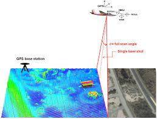

QGIS
QGIS functions as geographic information system (GIS) software, allowing users to analyze and edit spatial information, in addition to composing and exporting graphical maps. QGIS supports raster, vector and mesh layers.Vector data is stored as either point, line, or polygon features.Gary Sherman began development of Quantum GIS in early 2002, and it became an incubator project of the Open Source Geospatial Foundation in 2007.[6] Version 1.0 was released in January 2009.QGIS enables users to visualize their data using maps, charts,and diagrams while customizing the presentation with a variety of symbology choices.


LiDAR
LiDAR,which stands for Light Detection and Ranging,is a remote sensing method that uses light in the form of a pulsed laser to measure ranges (variable distances) to the Earth.Lidar systems allow scientists and mapping professionals to examine both natural and manmade environments with accuracy,precision,and flexibility.NOAA scientists are using lidar to produce more accurate shoreline maps,make digital elevation models for use in geographic information systems,to assist in emergency response operations,and in many other applications.


IT Developer
Quick and intuitive georeferencing tool to correctly position your survey without rescaling. View and process multiple survey datasets together on the same map. Overlay survey data onto other geo-data layers such as map images, aerial photography and lidar. Easily correlate anomalies between datasets.